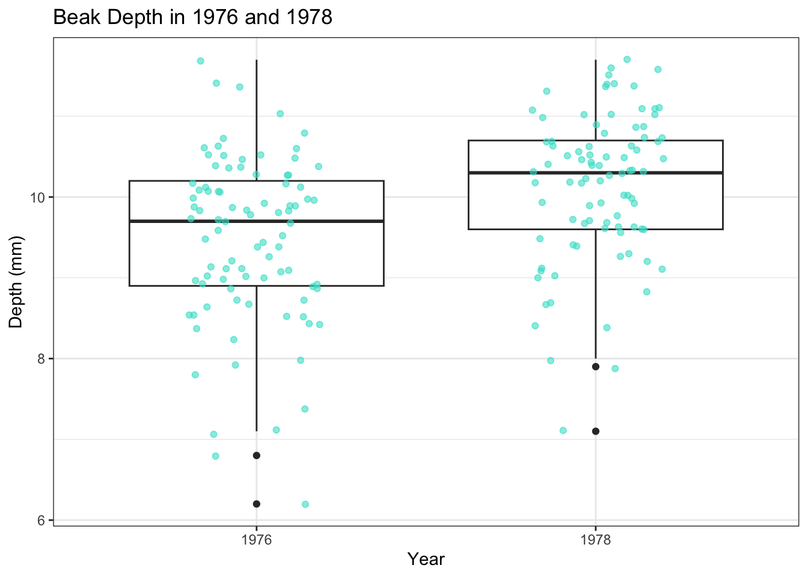
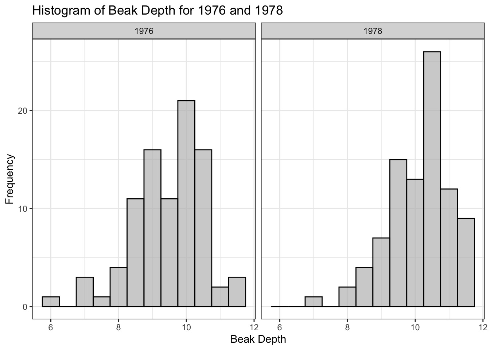
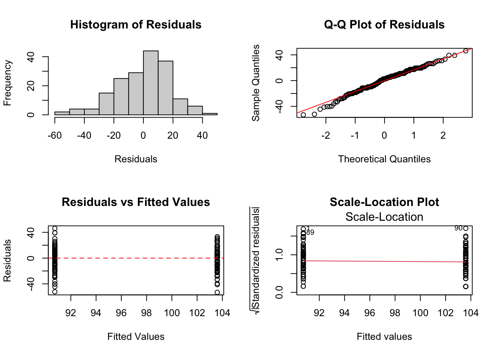

library(ggplot2)
library(SemiPar)
library(tidyr)
library(tidyverse)
library(Sleuth3)
library(knitr)
library(kableExtra)
library(dplyr)Beak Depth Changes in the Medium Ground Finch
Loading libraries:
Introduction
Beak morphology in many birds is thought to be under strong selective pressure relating to the acquisition and consumption of food (Grant & Grant, 1989). A severe drought on the Galapagos island Daphne Major changed the food availability for the medium ground finch, Geospiza fortis. The seeds which this species usually consumes became scarce, and the main food source shifted to larger and tougher seeds. Mortality was high during this period, and it was observed that most surviving individuals had larger beaks that enabled them to consume these larger seeds (Grant & Grant, 2006). Data on beak depth was collected before the drought in 1976 and after in 1978 for 89 individuals of the medium ground finch. Investigating whether the drought caused a shift in the mean beak depth of this population can elucidate the action and direction of natural selection, and help researchers understand how rapid character displacement can occur in a natural population. This analysis aims to test whether there was a significant shift in the beak depth of this population, which would be consistent with natural selection of beak depth in response to drought, by performing a linear regression analysis.

Methods
This analysis uses “case0201” contained in the Sleuth3 data frame. The dataset contains 178 rows denoting the individuals from which measurements were taken across the study period, as well as 2 columns representing beak depth and year.
head(case0201) Year Depth
1 1976 6.2
2 1976 6.8
3 1976 7.1
4 1976 7.1
5 1976 7.4
6 1976 7.8str(case0201)'data.frame': 178 obs. of 2 variables:
$ Year : int 1976 1976 1976 1976 1976 1976 1976 1976 1976 1976 ...
$ Depth: num 6.2 6.8 7.1 7.1 7.4 7.8 7.9 8 8.2 8.4 ...summary(case0201) Year Depth
Min. :1976 Min. : 6.200
1st Qu.:1976 1st Qu.: 9.100
Median :1977 Median : 9.900
Mean :1977 Mean : 9.804
3rd Qu.:1978 3rd Qu.:10.500
Max. :1978 Max. :11.700 To investigate whether there was a significant change in the mean beak depth of the medium ground finch population after the drought, this analysis performs a linear regression. This is a statistical method to model the relationship between a response variable and one or more predictors. The assumptions of linear regression include linearity of the relationship, independence of errors, homoscedasticity denoting constancy of variance of the residuals, and the normality of residuals.
By constructing various linear models with different response variables -Depth, log Depth, square root of Depth, squared Depth- and testing whether the residual distribution meets the assumptions of constant variance and normality required for linear regression, the present analysis landed on using “squared beak depth” as the response variable in the model.
The dataset was examined and transformations were made, after which residual diagnostics were used to test whether the different models met the assumptions of linear regression.
Data Transformation
# Adding transformed variables as columns in the dataset
case0201$log_Depth <- log(case0201$Depth)
case0201$sqrt_Depth <- sqrt(case0201$Depth)
case0201$Depth_squared <- case0201$Depth^2The residuals from log_Depth do not meet the assumption of normality in linear regression (p<0.05), as demonstrated by the Shapiro-Wilk test. Model2 is inadequate for further analysis.
# Linear model using log(Depth)
model2 <- lm(log_Depth ~ Year, data = case0201)
summary(model2)
Call:
lm(formula = log_Depth ~ Year, data = case0201)
Residuals:
Min 1Q Median 3Q Max
-0.41721 -0.05036 0.02002 0.07078 0.21783
Coefficients:
Estimate Std. Error t value Pr(>|t|)
(Intercept) -67.281612 15.566192 -4.322 2.58e-05 ***
Year 0.035184 0.007874 4.469 1.41e-05 ***
---
Signif. codes: 0 '***' 0.001 '**' 0.01 '*' 0.05 '.' 0.1 ' ' 1
Residual standard error: 0.105 on 176 degrees of freedom
Multiple R-squared: 0.1019, Adjusted R-squared: 0.09679
F-statistic: 19.97 on 1 and 176 DF, p-value: 1.406e-05# Testing normality of residuals
residuals2 <- resid(model2)
shapiro_test2 <- shapiro.test(residuals2)
shapiro_test2
Shapiro-Wilk normality test
data: residuals2
W = 0.93994, p-value = 8.591e-07The residuals of sqrt_Depth do not meet the assumption of normality in linear regression (p<0.05), as demonstrated by the Shapiro-Wilk test. Model3 is inadequate for further analysis.
# Linear model using sqrt(Depth)
model3 <- lm(sqrt_Depth ~ Year, data = case0201)
summary(model3)
Call:
lm(formula = sqrt_Depth ~ Year, data = case0201)
Residuals:
Min 1Q Median 3Q Max
-0.58252 -0.08239 0.02859 0.10554 0.34802
Coefficients:
Estimate Std. Error t value Pr(>|t|)
(Intercept) -103.89877 23.62042 -4.399 1.88e-05 ***
Year 0.05414 0.01195 4.531 1.08e-05 ***
---
Signif. codes: 0 '***' 0.001 '**' 0.01 '*' 0.05 '.' 0.1 ' ' 1
Residual standard error: 0.1594 on 176 degrees of freedom
Multiple R-squared: 0.1045, Adjusted R-squared: 0.09938
F-statistic: 20.53 on 1 and 176 DF, p-value: 1.08e-05# Testing normality of residuals
residuals3 <- resid(model3)
shapiro_test3 <- shapiro.test(residuals3)
shapiro_test3
Shapiro-Wilk normality test
data: residuals3
W = 0.95663, p-value = 2.681e-05The residuals of Depth do not meet the assumption of normality in linear regression (p<0.05), as demonstrated by the Shapiro-Wilk test. Model4 is inadequate for further analysis.
# Linear model using Depth
model4 <- lm(Depth ~ Year, data = case0201)
summary(model4)
Call:
lm(formula = Depth ~ Year, data = case0201)
Residuals:
Min 1Q Median 3Q Max
-3.2697 -0.5382 0.1618 0.6303 2.2303
Coefficients:
Estimate Std. Error t value Pr(>|t|)
(Intercept) -651.04719 144.18752 -4.515 1.15e-05 ***
Year 0.33427 0.07293 4.583 8.65e-06 ***
---
Signif. codes: 0 '***' 0.001 '**' 0.01 '*' 0.05 '.' 0.1 ' ' 1
Residual standard error: 0.973 on 176 degrees of freedom
Multiple R-squared: 0.1066, Adjusted R-squared: 0.1016
F-statistic: 21.01 on 1 and 176 DF, p-value: 8.65e-06# Testing normality of residuals
residuals4 <- resid(model4)
shapiro_test4 <- shapiro.test(residuals4)
shapiro_test4
Shapiro-Wilk normality test
data: residuals4
W = 0.97012, p-value = 0.0007184Linear Model
Owing to the normality and constant variance of the residuals, the following model was chosen for the present analysis.
model <- lm(Depth_squared ~ Year, data = case0201)Results
Table 1 summarizes the key properties of the dataset, including minimum and maximum values for beak depth in the population for before and after the flood, as well as the respective mean values. There is an increase in the mean beak depth of the population after the drought in 1977.
# Summary table creation
summary_table <- case0201 %>%
summarise(
`Minimum Beak Depth (mm)` = min(Depth),
`Maximum Beak Depth (mm)` = max(Depth),
`Mean Beak Depth (1976, mm)` = mean(Depth[Year == 1976]),
`Mean Beak Depth (1978, mm)` = mean(Depth[Year == 1978]),
`Mean Beak Depth Squared (1976, mm²)` = mean(Depth_squared[Year == 1976]),
`Mean Beak Depth Squared (1978, mm²)` = mean(Depth_squared[Year == 1978])
) %>%
t() %>% # Transposes the table so that metrics are rows
as.data.frame()
# Converting the row names of the summary_table dataframe into a new column named "Metric"
summary_table <- tibble::rownames_to_column(summary_table, "Metric")
colnames(summary_table) <- c("Metric", "Value")
# Creating the summary table
summary_table %>%
kbl(caption = "Table 1: Key Features of Finch Beak Depth Data") %>%
kable_styling(bootstrap_options = c("striped", "hover", "condensed"), full_width = FALSE)| Metric | Value |
|---|---|
| Minimum Beak Depth (mm) | 6.200000 |
| Maximum Beak Depth (mm) | 11.700000 |
| Mean Beak Depth (1976, mm) | 9.469663 |
| Mean Beak Depth (1978, mm) | 10.138202 |
| Mean Beak Depth Squared (1976, mm²) | 90.734382 |
| Mean Beak Depth Squared (1978, mm²) | 103.595618 |
Descriptive Statistics
Examining the distribution of beak depth in the population before and after the flood as well as the mean values for each year is possible using a histogram and box plot. Figures 1 and 2 highlight the upwards shift in beak depth in the population from 1976 to 1978.
Fig1 <- case0201 |>
ggplot() +
geom_boxplot(aes(x = as.factor(Year), y = Depth)) +
geom_jitter(aes(x = as.factor(Year), y = Depth), width = 0.2, alpha = 0.6, color = "turquoise") + # Add jittered points
labs(x = "Year", y = "Depth (mm)", title = "Beak Depth in 1976 and 1978") +
theme_bw()
Fig1
Fig2 <-ggplot(case0201, aes(x = Depth)) +
geom_histogram(binwidth = 0.5, color = "black", fill = "gray", alpha = 0.7) +
facet_wrap(~ Year) +
labs(x = "Beak Depth",
y = "Frequency",
title = "Histogram of Beak Depth for 1976 and 1978") +
theme_bw()
Fig2
Linear Regression
The linear regression used squared beak depth as the response variable, which is shown to be the appropriate data transformation due to the normality of residuals. This is proven by the p-value of the Shapiro-Wilk test, which is greater than 0.05, suggesting the homoscedasticity of residuals in the model.
# Testing normality of residuals
residuals <- resid(model)
shapiro_test <- shapiro.test(residuals)
shapiro_test
Shapiro-Wilk normality test
data: residuals
W = 0.98721, p-value = 0.1063Despite the Shapiro-Wilk test result, it is important to visually inspect the distribution of residuals by running residual diagnostics.
# Setting up a 2x2 grid for the figure
par(mfrow = c(2, 2))
# Histogram of residuals
hist(residuals(model), main = "Histogram of Residuals", xlab = "Residuals")
# Q-Q plot with line
qqnorm(residuals(model), main = "Q-Q Plot of Residuals")
qqline(residuals(model), col = "red")
# Residuals vs. fitted values
plot(fitted(model), residuals(model),
main = "Residuals vs Fitted Values",
xlab = "Fitted Values",
ylab = "Residuals")
abline(h = 0, col = "red", lty = 2)
# Scale-Location plot
plot(model, which = 3, main = "Scale-Location Plot")
The distribution of the residuals shown in the histogram is slightly left-skewed, suggesting a slight deviation from normality. Despite points on the Q-Q plot largely falling on the diagonal, there are deviations at the extremes. The straight line on the “Residuals vs Fitted Values” plot indicates the homoscedasticity of the residuals, and the same goes for the “Scale-Location Plot”. Taken together, the residual diagnostics confirm the overall normality of residuals from the linear model used in the analysis, despite slight deviations for extreme values.
Model Fit
summary(model)
Call:
lm(formula = Depth_squared ~ Year, data = case0201)
Residuals:
Min 1Q Median 3Q Max
-53.186 -11.436 2.494 11.276 46.156
Coefficients:
Estimate Std. Error t value Pr(>|t|)
(Intercept) -12616.167 2728.856 -4.623 7.29e-06 ***
Year 6.431 1.380 4.659 6.25e-06 ***
---
Signif. codes: 0 '***' 0.001 '**' 0.01 '*' 0.05 '.' 0.1 ' ' 1
Residual standard error: 18.42 on 176 degrees of freedom
Multiple R-squared: 0.1098, Adjusted R-squared: 0.1047
F-statistic: 21.7 on 1 and 176 DF, p-value: 6.251e-06The linear regression returned a highly significant p-value at the 0.001 level, demonstrating the significant change in mean beak depth of the medium ground finch population. The slope indicates that squared beak depth increases by approximately 6.431 units for each additional year, and the p-value for this implies a strong linear relationship between year and squared beak depth. Thus, year can be said to be a statistically significant predictor of beak depth in this analysis. Additionally, the significance of the F-statistic confirms the significance of the linear model used in this analysis.
However, the R-squared value of around 11% is relatively low. Only 11% of variability in squared beak depth is explained by year, suggesting the contribution of other factors which are not captured in the model. It is important to note that the present analysis uses year as a proxy for before and after the flood, but using environmental factors directly in the model may improve performance. Other factors that could have contributed to the observed trend, such as genetic variation and occurrence of hybridization with other species.
Conclusions
This present analysis aimed to test whether there is evidence for the natural selection of beak depth in response to drought in a population of medium ground finches on the island Daphne Major. A linear regression was performed which included squared beak depth as the response variable, due to the distribution of its residuals meeting the assumptions of this statistical method. A highly statistically significant slope (<0.001) demonstrates that there is a strong linear relationship between squared beak depth and year for this dataset, and the significance of the model overall is proven by the F-statistic. From these results, it can be said that year has a significant effect on the beak depth of this population.
However, the R-squared value of only 11% suggests that year explains only a minor amount of variation seen in squared beak depth, and additional factors not included in this analysis likely play a role. It is important to consider that this analysis used year as a proxy for the drought which occurred on the island in 1977. Thus, including environmental factors such as rainfall or seed availability in the model directly rather than proxies such as year may improve the model performance. Another factor to consider is genetic variation. It is known that finches on the Galapagos islands can often hybridize, and the occurrence of such events may increase the genetic variation of a species, enabling it to respond more quickly to sudden environmental changes (Grant & Grant, 1996). Hybridization might be an important predictor of the propensity for beak depth to respond and change by providing the necessary alleles and genetic variation for natural selection to rapidly act upon, leading to character displacement. Although difficult to capture, including allelic diversity and the propensity to produce hybrids into the model could significantly improve its performance.
Taken together, the results of this analysis suggest that while year is an important predictor of beak depth increase in this population, other factors not captured in the model likely also play a role. Omitting the use of proxies such as year and including environmental factors directly in the model, as well as accounting for the effects of genetic variation and the propensity to hybridize may significantly improve model performance and explain more of the variation in beak depth seen in this population.
References
Grant, B.R. and Grant, P.R. (1989) ‘Natural selection in a population of Darwin’s finches’, The American Naturalist, 133(3), pp. 377–393. doi:10.1086/284924.
Grant, B.R. and Grant, P.R. (1996) ‘High survival of Darwin’s finch hybrids: Effects of beak morphology and diets’, Ecology, 77(2), pp. 500–509. doi:10.2307/2265625.
Grant, B.R. and Grant, P.R. (2003) ‘What Darwin’s finches can teach us about the evolutionary origin and regulation of Biodiversity’, BioScience, 53(10), p. 965. doi:10.1641/0006-3568(2003)053[0965:wdfctu]2.0.co;2.
Grant, P.R. and Grant, B.R. (2006) ‘Evolution of character displacement in Darwin’s finches’, Science, 313(5784), pp. 224–226. doi:10.1126/science.1128374.
Grant, P.R. et al. (1976) ‘Darwin’s finches: Population variation and natural selection.’, Proceedings of the National Academy of Sciences, 73(1), pp. 257–261. doi:10.1073/pnas.73.1.257.